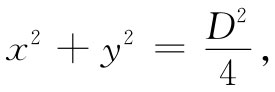
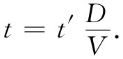
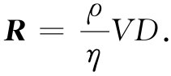

现在我们要来描述因新的黏性项在流体流动特性方面所造成的一些变化。我们将相当详细地探讨两个问题。第一个是流体经过柱体的流动——那是我们在上一章就曾试图用非黏性流动的理论进行计算的问题。事实证明，今天人们只能对几种特殊情况求得黏性方程组的解。因此将要告诉你们的某些东西是建立在实验测量基础上的——假定实验模型满足方程式（41.17）。
数学上的问题是：我们很想对不可压缩的黏性流体流经一根直径为D的长柱体的流动进行求解。这种流动应该由式（41.17）及
Ω=▽×v （41.18）
给出，同时满足下述条件：在远处速度是某个恒定值，比方说V（平行于x轴），在柱体的表面处速度为零，即对于表面

会有
vx =vy =vz =0. （41.19）
那就完全规定了该数学问题。
如果你考察那些方程式，你会明白对于该问题有四个不同常数：η，ρ，D和V。你也许会想到应该对于不同的V、不同的D等等给出一整系列的情况。然而，实际情况却并非如此，所有这些不同的可能解答均相应于一个参数 的不同数值，这就是我们关于黏性流动所能说的最重要的普遍的东西。要知道其所以然，首先应当注意黏性和密度只出现在比率η/ρ——即比 黏性中。这就把独立参数的数目减少到三个。现在假定我们采用出现于这个问题中的唯一长度、即柱体的直径D来量度所有距离，那就是说，用按照下列关系的新变量x′，y′，z′来代替x，y，z：
x=x′D，y=y′D，z=z′D，
这样D就从式（41.19）中消失了。同样地，若我们用V来量度所有的速度——即是令v=v′V——则可以消去V，而在大距离上v′正好等于1。由于已确定了长度和速度的单位，所以现在我们的时间单位就是D/V。因而应该令
 （41.20）
采用这一套新的变量，式（41.18）中的那些微商就得从∂/∂x改成（1/D）∂/∂x′，其余依次类推，因而式（41.18）就变成
于是我们的主方程式（41.17）可以看作
所有常数都精简成一个因子，根据传统我们将其写成1/R：
 （41.22）
如果真正记住全部方程式都是以这些新单位的量写出的，则可以省略一切带撇号。于是上面关于流动的方程组为
和
Ω=▽×v.
所附条件为：对于
x2 +y2 =1/4， （41.24）
v=0；
以及对于 x2 +y2 +z2 ≫1，
vx =1，vy =vz =0.
这在物理上所包含的全部意义十分有趣。比如，它意味着：若我们解决了关于某速度V1 和某个柱体直径D1 的流动问题，然后又问起关于不同的D2 及另一种流体的流动问题，则对于给出相同雷诺数的速度V2 ——也就是说，当
时，流动将是相同的。对于雷诺数相同的任何两种情况，流动“看起来”将是一样的——用适当标度x′，y′，z′和t′的话。这是一个重要定理，因为它意味着我们不需制成一架飞机来做试验，就可以确定空气流经机翼时的行为。作为代替，可以制造一个模型并利用提供相同雷诺数的速度来进行测量。这是一个原理，它容许我们把小型飞机所作的“风洞”测量结果或把按比例缩小了的模型船在“模型池”中的试验结果应用于实际尺寸的物体。然而应当记住，只有假定流体的压缩性可以忽略时，我们才能这样做。要不然，就会进入一个新的量——声速。而只有在V对声速的比值也相同时，不同的情况才会真正互相对应。这后一比值称为马赫数 。因此，对于接近声速或超过声速的速度，若两种情况的两个马赫数 及两个雷诺数 都相同，则在这两种情况下的流动才会彼此相同。